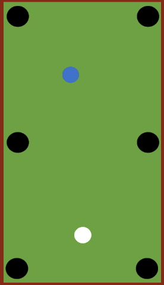

Fragestellungen und Hypothesen
Bitte ordnen Sie zu: Auf wen gehen folgende Theorien zurück?
-
Wittgenstein -
Sperber & Wilson -
Langacker
All Answers Answered
Answers Remain
Die Beispiele zeigen, dass es nicht immer einfach ist, die beiden Ebenen zu trennen. Warum ist beispielsweise die Aussage “Im Jahr 2019 hatte jede Frau in Deutschland im Schnitt 1,54 Kinder.” auf der Modell-Ebene anzusiedeln, obwohl sie auf konkreten Daten ( des Statistischen Bundesamts) beruht? Hier ist die Antwort relativ einfach: Natürlich hat keine Frau anderthalb Kinder. Wenn wir mit Durchschnittswerten arbeiten, abstrahieren wir über die konkreten Gegebenheiten in der Realität – in diesem Fall basteln wir uns quasi eine “Durchschnitts-Frau”, die es so natürlich nicht gibt.
Und warum würden wir eine Aussage wie “X senkt das Risiko, an Demenz zu erkranken” auf der Ebene des Modells ansiedeln, obwohl solchen Aussagen im Regelfall statistische Erhebungen zugrundeliegen, die Daten aus der realen Welt mit einbeziehen? – Dafür gibt es mehrere Gründe:
-
1. Wie zuvor schon erläutert, werden hier komplexe Zusammenhänge stark vereinfacht und auf einen Aspekt heruntergebrochen. Deshalb ist es sinnvoll, eine solche Aussage zunächst einmal in der “kleinen Welt” zu verorten.
-
Es wird ein kausaler Zusammenhang angenommen, also ein Ursache-Wirkung-Zusammenhang. Ein solcher Zusammenhang ist aber in der Regel nicht unmittelbar beobachtbar. Daher verorten wir ihn auf der Ebene des Modells.
Auf diesen letzten Punkt lohnt es sich näher einzugehen, denn er führt uns zu einer wichtigen Frage: Was können wir aus empirischen Daten über kausale Zusammenhänge ableiten?
Korrelation und Kausalität
Wenn Sie sich mit empirischem Arbeiten beschäftigen, werden Sie früher oder später dem Leitsatz begegnen: Korrelation ist nicht Kausalität! Was ist damit gemeint?
Schauen wir uns folgende Beispiele an, die auf Daten aus den USA aus den Jahren 1999 bis 2009 beruhen:
-
 In Jahren, in denen mehr Filme mit Nicolas Cage ins Kino gekommen sind, sind mehr Menschen in Swimmingpools ertrunken als in anderen Jahren.
In Jahren, in denen mehr Filme mit Nicolas Cage ins Kino gekommen sind, sind mehr Menschen in Swimmingpools ertrunken als in anderen Jahren. -
In Jahren, in denen beim US-Buchstabierwettbewerb “National Spelling Bee” die zu buchstabierenden Wörter kürzer waren, sind weniger Menschen am Biss einer Giftspinne gestorben.
Diese und weitere Daten sind hier zu finden. Es ist relativ offensichtlich, dass die scheinbaren Zusammenhänge keine sind. In solchen Fällen spricht man von Scheinkorrelationen (engl. spurious correlations). Und während die genannten Beispiele absurd genug sind, um zu dem Schluss zu gelangen, dass höchstwahrscheinlich kein Zusammenhang zwischen den genannten Variablen besteht, ist es in anderen Fällen weitaus schwieriger zu beurteilen, ob ein Zusammenhang kausal ist, also ein Ursache-Wirkung-Zusammenhang besteht, oder lediglich korrelational, d.h. eine Wenn-dann-Verbindung zwischen beiden zu beobachten ist, die aber auch zufällig zustande gekommen sein kann. Im Grunde sind Kausalzusammenhänge nie direkt beobachtbar. Nehmen wir ein häufig verwendetes Beispiel: Billardkugeln.
Stellen wir uns vor, die weiße Kugel berührt eine andere Kugel, worauf diese sich in Bewegung setzt. Natürlich ist uns klar, dass die Berührung der weißen Kugel der Grund dafür ist, dass sich die andere Kugel bewegt. Aber streng genommen können wir nicht wissen, dass ein kausaler Zusammenhang zwischen diesen Ereignissen besteht. Denn der Kausalzusammenhang ist nicht beobachtbar. Wir wissen aber aus unserer Alltagserfahrung, dass bei der Bewegung von Objekten bestimmte Korrelationen so robust auftreten, dass sie quasi als Gesetzmäßigkeiten gelten können. In der Physik wurden diese Gesetzmäßigkeiten etwa in den Newtonschen Gesetzen beschrieben. Diese Gesetzmäßigkeiten sind so gut belegt und auch so sehr in unserem Alltagswissen verankert, dass es fast absurd erscheint, den Kausalzusammenhang in unserem Beispiel des Billardstoßes auch nur ansatzweise in Frage zu stellen. Und dennoch gilt, dass wir den Kausalzusammenhang nicht sehen können. Rein theoretisch bestünde die Möglichkeit, dass die Kugel sich aus eigener Kraft bewegt. Das ist natürlich sehr unwahrscheinlich und würde bedeuten, dass die Physik über Jahrhunderte völlig danebengelegen hätte. Aber rein auf Grundlage dessen, was wir beobachten können, ist diese Option nicht letztgültig auszuschließen – und das ist der Grund, warum es in der Wissenschaft letztgültige Wahrheiten fast niemals geben kann.
Damit wollen wir aber unseren wissenschaftsphilosophischen Exkurs beenden – denn auch wenn es keine endgültigen Gewissheiten geben kann, wollen wir doch versuchen, der Wahrheit (um noch ein großes Wort zu verwenden) so nah wie möglich zu kommen. Und genau dafür brauchen wir empirische Daten.
< Zurück Hauptseite Weiter >